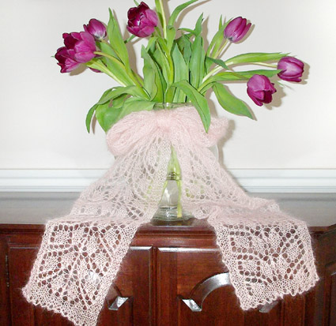
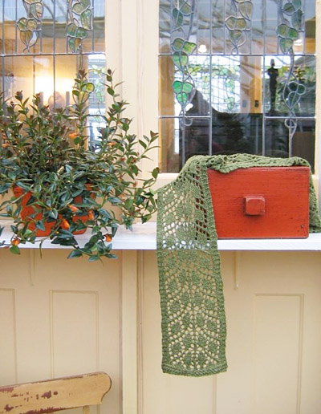
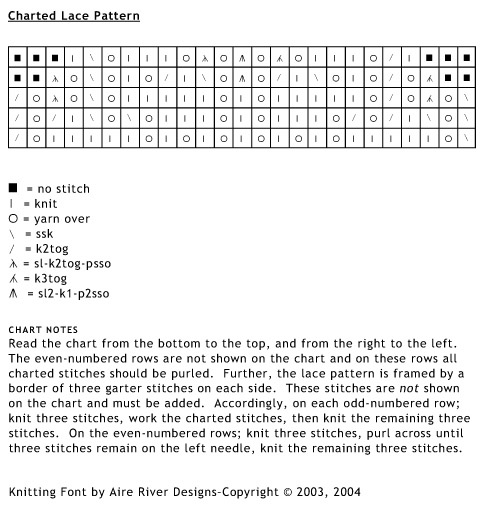
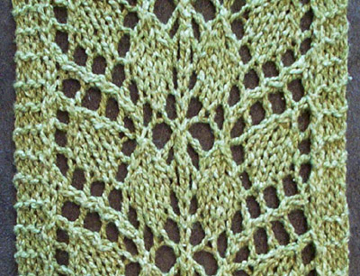

 by
Susan
Pierce Lawrence by
Susan
Pierce Lawrence
I've
often heard new knitters say they'd like to
progress beyond garter stitch scarves but then
balk when I suggest that they try lace knitting.
This scarf incorporates an easy, leaf-motif
lace pattern for those willing to "branch
out" from garter or stockinette stitch.
The lace pattern used in
the scarf is a slight variation of "Leaf
Shadows" in Barbara Walker's Second Treasury
of Knitted Patterns. Although it is fairly simple,
the pattern incorporates all of the most common
increases and decreases used in lace knitting.
So, once you've knit this scarf you can knit
just about any lace pattern. Also, I encourage
everyone to knit the scarf by using the chart.
I find that knitting from a chart is much easier
than knitting from written instructions.
|
|
model:
springy tulips and
assorted bits of furniture
photos:
Laurie Oberg Hadden |
|
| One |
| |
|
Silky Wool Version (green
scarf): 7 inches wide, 59 inches long (after
blocking)
Douceur et Soie Version (pink scarf): 7 inches
wide, 78 inches long (after blocking)
|
| |
| |
|
Elsebeth Lavold, Silky Wool [65% wool, 35% silk;
190 yards /175 meters per 50g skein];
color: Moss #008; 1 skein
or
Knit One Crochet Two, Douceur et Soie [70% baby
mohair, 30% silk; 225 yards/205 meters per 25g
skein]; color: Soft Sunrise #8243; 1 skein
1 set US #8/5mm straight needles
Tapestry needle
|
|
|
|
Gauge is not
crucial.
Silky Wool Version: 16 sts/26
rows = 4 inches in stockinette stitch (unblocked)
Douceur et Soie Version: 20 sts/24 rows = 4
inches in stockinette stitch (unblocked)
|
|
|
|
[Knitty's list of standard abbreviations can be found
here]
k3tog: knit
three stitches together
sl-k2tog-psso: slip one stitch purlwise,
knit the next two stitches together, pass the
slipped stitch over
sl2-k1-p2sso: slip two stitches together
knitwise (i.e., slip two stitches as if to knit
them together), knit the next stitch, pass the
two slipped stitches over
The scarf can be knit from any yarn.
However, if this is your first lace project, the Elsebeth
Lavold Silky Wool is an excellent choice. It is extremely
soft and light-weight, it does not split, it is easy
to frog or tink if you make a mistake, and it has
wonderful stitch definition. If you are a more experienced
lace knitter, the Douceur et Soie makes a beautiful,
feather-weight scarf.
|
Loosely
cast on 25 stitches.
Work 5 rows in garter stitch
(knit each row).
Begin working lace pattern
following either chart (and Pattern Notes)
or written instructions below.
VERY IMPORTANT: If
you are knitting from the chart, it is imperative
to read Pattern Notes before beginning!
Row 1 [RS]: k3,
ssk, yo, k5, [yo, k1] 5 times, yo, k5, yo,
k2tog, k3 (31 sts)
Row 2 [WS]: k3,
p25, k3
Row 3 [RS]: k3,
ssk, yo, ssk, k1, [k2tog, yo] 2 times, k3,
yo, k1, yo, k3, [yo, ssk] 2 times, k1, k2tog,
yo, k2tog, k3 (31 sts)
Row 4 [WS]: k3,
p25, k3
Row 5 [RS]: k3,
ssk, yo, k3tog, yo, k2tog, yo, k5, yo, k1,
yo, k5, yo, ssk, yo, sl1-k2tog-psso, yo, k2tog,
k3 (31 sts)
Row 6 [WS]: k3,
p25, k3
Row 7 [RS]: k3,
k3tog, yo, k2tog, yo, k1, yo, ssk, k1, k2tog,
yo, sl2-k1-p2sso, yo, ssk, k1, k2tog, yo,
k1, yo, ssk, yo, sl1-k2tog-psso, k3 (27 sts)
Row 8 [WS]: k3, p21, k3
Row 9 [RS]: k4, k2tog, yo, k3, yo, k3tog,
yo, sl2-k1-p2sso, yo, sl1-k2tog-psso, yo,
k3, yo, ssk, k4 (25 sts)
Row 10 [WS]: k3, p19, k3
Repeat Rows 1-10 until the scarf
is as long as you like it or until you are
almost out of yarn. You should be able to
complete twenty-seven pattern repeats if you
are using the Silky Wool yarn and thirty-six
pattern repeats if you are using the Douceur
et Soie yarn.
Work 5 rows in garter stitch.
BO all sts loosely.

|
| Weave
in yarn ends. Soak scarf in cool water until
thoroughly wet. Gently squeeze out the excess
water. Place the scarf between two towels and
press out more water. Block by pinning the damp
scarf on a flat surface. Remove when completely
dry.
|
|
Susan
is a former Bostonian now living in Utah.
She chronicles her obsession with sock knitting and
her relentless efforts to knit up her stash on her
blog, I'm
Knitting As Fast As I Can.
|
| Pattern & images
© 2005 Susan Lawrence. Contact Susan |
|